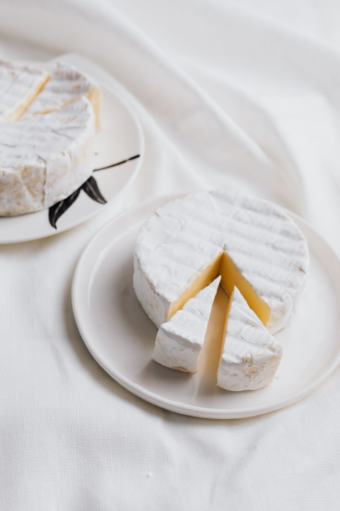
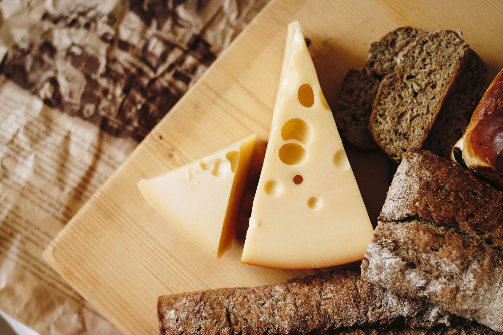
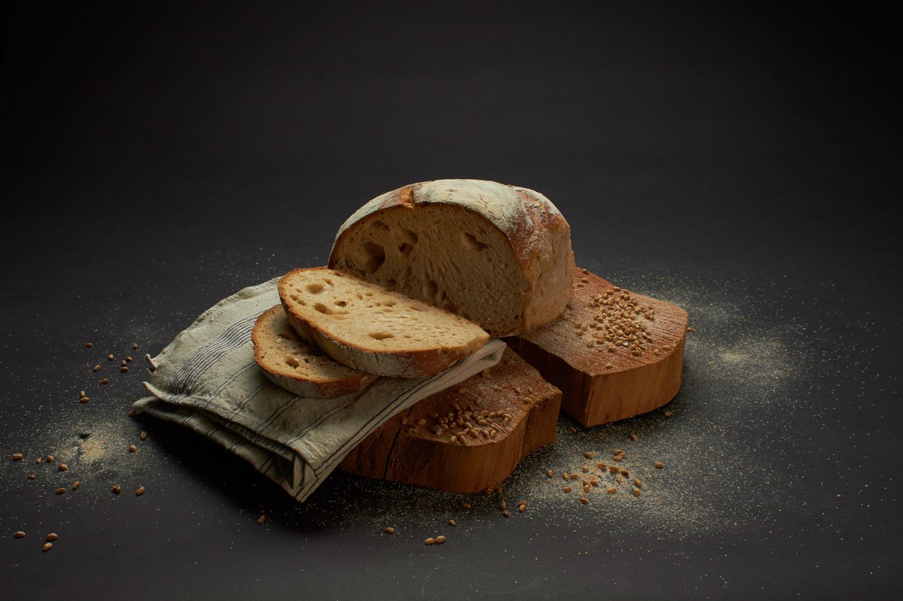
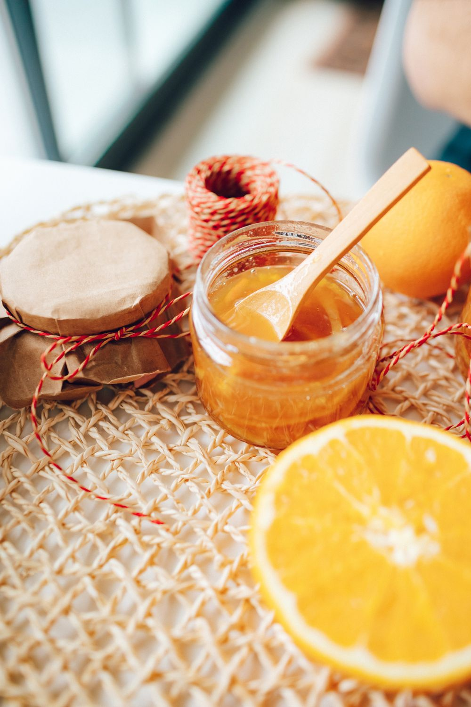

Quesos
Una de las familias de productos recogidas en las referencias de la abacería. Si quieres conocer qué quesos puedes encontrar, pregunta por la selección actual y elige en la tienda.

Tienda de alimentación · El Bosque, Cádiz
Productos gastronómicos
de la Sierra de Cádiz.
Avenida Diputación, 11
11670 El Bosque, Cádiz
Junto a Venta Julián.
Abacería de Julián es una tienda de productos gastronómicos de la Sierra de Cádiz, situada en Avenida Diputación, 11.
La tienda se encuentra junto a Venta Julián y cuenta con un espacio dedicado a la compra de alimentos. Su actividad acerca los productos de la zona a quienes viven en El Bosque y a quienes visitan la sierra.
Esta página te presenta la abacería y su oferta documentada. Para conocer la selección disponible hoy, sus precios o el horario de la tienda, puedes contactar directamente por teléfono.
La oferta de la abacería
Quesos, chacinas, mieles y pan aparecen en las referencias públicas de la tienda. Consulta las variedades y la disponibilidad en tu próxima visita.

Una de las familias de productos recogidas en las referencias de la abacería. Si quieres conocer qué quesos puedes encontrar, pregunta por la selección actual y elige en la tienda.
También forman parte de la oferta documentada. Contacta con la abacería si buscas un producto o formato concreto: podrás consultar las opciones antes de acercarte.
También en la tienda
Dos compras mencionadas por quienes han visitado la abacería. Conoce su disponibilidad directamente en el establecimiento.

La compra de pan en la abacería está documentada en relatos de visitantes. Para organizar tu compra, pregunta qué formatos hay disponibles y confirma el horario del día.

Las mieles también aparecen en las referencias de la tienda. Si buscas una variedad concreta, consulta la selección actual antes de tu visita.
Las fotografías son ilustrativas y la oferta descrita procede de referencias públicas. No es un catálogo de existencias actuales; variedades y precios se consultan con la abacería.
Una llamada puede ayudarte a preparar tu compra y tu visita.
Llama al 633 868 221 para preguntar por productos, formatos y precios. La disponibilidad se confirma con la tienda.
Consulta por teléfono el horario del día antes de desplazarte. No disponemos de un horario actual de la tienda confirmado.
La abacería es la tienda de alimentación situada junto a Venta Julián. Esta página se centra en la compra de productos; no presenta carta ni servicios de restauración.
Ven a conocernos
Tu dirección para encontrar Abacería de Julián en El Bosque.
La tienda está junto a Venta Julián.
Cómo llegar en Google Maps, nueva pestañaProductos, disponibilidad y horario de la tienda.
633 868 221